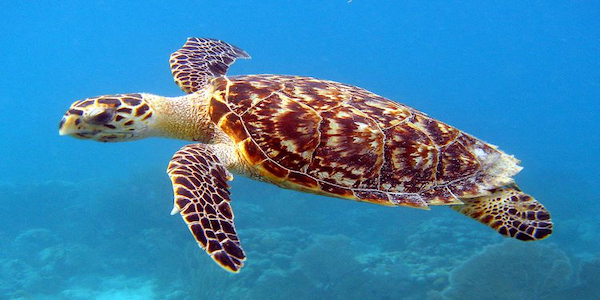
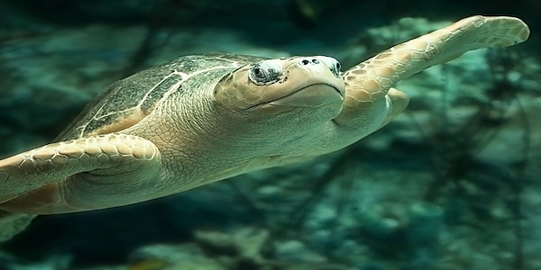
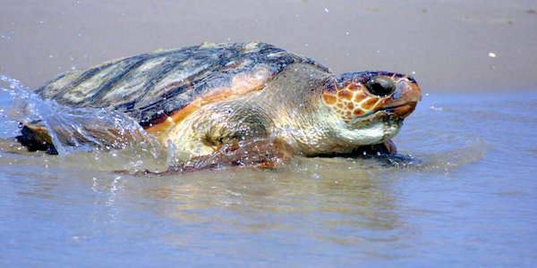
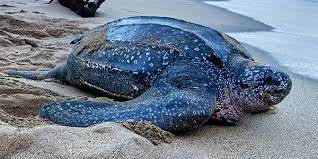

- HOME
- TURTLE CATEGORIES
- HIKKADUWA TURTLE HATCHERY
- THREATS TO TURTLES
- OTHER TURTLE HATCHERIES
- PURCHASE AND DONATE
TURTLE CATEGORIES
Five of the world's seven sea turtle species come to Sri Lanka to breed. These are the Green Turtle (Chelonia mydas), Hawksbill Turtle (Eretmochelys imbricata), Olive Ridley (Lepidochelys olivacea), Loggerhead Turtle (Caretta caretta), and Leatherback Turtle (Dermochelys coriacea). The sea turtles are known as Kesbawa in Sinhala and Amai in Tamil.The shells of turtles and tortoises differ. The carapace, or top half of the turtle's shell, is streamlined and short, making swimming easy.Tortoise shells, on the other hand, are thicker and more suitable for defense. The plastron, or beneath shell, of the two species differs in the same way. Instead of a bony shell, the leathery turtle has thick leathery skin. Turtles have broad, flattened flippers, but tortoises have short, cylindrical limbs. The flippers improve swimming but make it harder for females to move around on the beaches where they return to nest. The following break down shows the different types of turtles in Sri Lanka.
These are the most common sea turtles in Sri Lnkan waters. They can be recognized from other sea turtles by having a single pair of prefrontal scales (scales in front of the eyes) rather than two pairs as found in other sea turtles. The head is tiny and blunt, with a serrated mouth. Carapace is bony with no ridges and broad, non-overlapping scutes (scales) with just four lateral scutes. In comparison to Pacific green turtles, the body is roughly oval and more depressed (flattened). Each flipper has one visible claw. The hue of the carapace ranges from mild to extremely dark green, and from plain to vivid yellow, brown, and green tones with radiating stripes. The plastron ranges from white, dirty white, or yellowish in Atlantic populations to dark grey-bluish-green in Pacific populations.Hatchlings are dark brown or nearly black with a white underside and white flipper edges. In example, the Pacific green turtle (also known as the Black Sea Turtle) has a body that is substantially elevated or vaulted and appears less spherical in a frontal perspective than other green sea turtles. The color is the most noticeable variation, with Pacific greens having a dark grey to black carapace and hatchlings being a dark-brown or black with a small white border and white below.
Adults have carapace lengths of 3 to 4 feet (83 - 114 cm). The Cheloniidae family includes the largest turtle, the green turtle. The largest green turtle ever discovered weighed 871 pounds and measured 5 feet (152 cm) in length (395 kg).
Adults range in weight from 240 to 420 pounds (110 - 190 kg).
Diet is variable throughout life. Worms, immature crustaceans, aquatic insects, grasses, and algae are eaten when less than 8 to 10 inches in length. Green turtles, the only sea turtles that are strictly herbivorous as adults, eat sea grass and algae until they reach 8 to 10 inches in length. Their jaws are sharply serrated, allowing them to rip grass with ease.

he hawksbill sea turtle is one of the smallest marine turtles. The head is small and features two pairs of prefrontal scales (scales in front of its eyes). The jaw is not serrated. The carapace is bony with no ridges and massive, over-lapping scutes (scales) with four lateral scutes. The carapace is elliptical in form. Flippers have two claws. The carapace is orange, brown, or yellow, and hatchlings are predominantly brown with light spots on the scutes.Adults have carapace lengths ranging from 2.5 to 3 feet (71 - 89 cm).
Adults can weigh between 101 and 154 pounds (46 - 70 kg). The hawksbill's tiny head and beak-like jaws allow it to feed on coral reef crevices. They eat sponges, anemones, squid, and shrimp. They are usually found along coastal reefs, rocky places, estuaries, and lagoons. Nesting occurs every 2 to 4 years. Nests 3-6 times per season. In each nest, she lays an average of 160 eggs. Eggs incubate for roughly 60 days. The most tropical of all sea turtles. The tropical and subtropical waters of the Atlantic, Pacific, and Indian Oceans

The head is relatively small. The carapace is bony with no ridges and huge scutes (scales). The carapace features 6 or more lateral scutes and is nearly round and smooth. Its body is deeper than that of the extremely similar Kemp's Ridley marine turtle. Both the front and back flippers feature one or two visible claws. The front flippers may include an additional claw. Juveniles are charcoal grey, while adults are a dark grey green. Wet hatchlings are black with greenish flanks.
Adults have a carapace length of 2 to 2.5 feet (62-70 cm). Adults typically weigh between 77 and 100 pounds (35-45 kg). They have powerful jaws that allow them to eat crustaceans (like shrimp and crabs), mollusks, tunicates, fish, crabs, and shrimp. Usually found in coastal bays and estuaries, although can be found in more oceanic areas of its range. They mainly forage in open waters off the coast or descend to depths of 500 feet (150 meters) to feed on bottom-dwelling crustaceans. Every year, arribadas (Spanish for "arrival") are mass coordinated nestings. Only the Kemp's ridley nests in this manner. Every season, it lays two eggs. A typical clutch size is over 110 eggs, requiring a 52 to 58 day incubation period.

The head is enormous, with powerful jaws. Carapace is bony without ridges and has big, non-overlapping, rough scutes (scales) with 5 lateral scutes. The carapace is heart-shaped. Front flippers are short and stout, with two claws, but rear flippers might have two or three claws. The carapace is reddish-brown with a yellowish-brown plastron. Hatchlings have a dark brown carapace with pale brown borders on their flippers. Carapace length ranges from 2.5 to 3.5 feet (80 to 110 cm).Adults weigh between 155 and 375 pounds (70 to 170 kg).
Adults typically weigh between 155 and 375 pounds (70 to 170 kg). Mostly carnivorous, feeding on shellfish found at the ocean's bottom. Horseshoe crabs, clams, mussels, and other crustaceans are among the foods they consume. Its strong jaw muscles make it easy for them to smash the clam. Like to feed in coastal bays and estuaries, as well as in shallow water along the Atlantic, Pacific, and Indian Ocean continental shelves. Nesting occurs every 2 to 4 years. They lay 3–6 nests every season, 12–14 days apart. Each nest contains between 100 and 126 eggs on average. Eggs are incubated for a period of time.

The upper jaw is severely notched, and there are two cusps on the head. The leatherback sea turtle is the only one that lacks a hard shell. It has a broad, elongated, and flexible carapace with seven distinct ridges that traverse the length of the animal. Except in hatchlings, the carapace is composed of a layer of thin, strong, rubbery skin reinforced by hundreds of microscopic bone plates. All flippers are clawless. The carapace is dark grey or black with white or pale patches, while the plastron is white to black with 5 ridges. The carapace of hatchlings has white spots.
4 to 6 feet (130 – 183 cm). The longest leatherback ever reported measured nearly 10 feet (305 cm) from beak to tail tip and weighed 2,019 pounds (916 kg). 660 to 1,100 pounds (300 – 500 kg). Leatherbacks' jaws are sensitive, scissor-like. Their jaws would be destroyed if they did not eat soft-bodied invertebrates, hence they eat virtually entirely jellyfish. It is astonishing that this enormous, energetic animal can survive on a diet of jellyfish, which appear to be a poor provider of nutrients. They are mostly found in the open ocean, from Alaska to the southern tip of South America. They nest every 2 to 3 years, yet current study indicates they can nest every year. Nests 4 to 7 times per season, with an average of 10 days between nestings. In each nest, she lays an average of 80 fertilized eggs the size of billiard balls and 30 smaller, unfertilized eggs. Eggs incubate for roughly 65 days. Leatherback females, unlike other sea turtle species, may shift nesting beaches, though they often stay in the same area.

| Name | Scientific Name | Location | Habitat | Size | Nesting |
|---|---|---|---|---|---|
| The Green Turtle | Chelonia mydas | Hikkaduwa | Within sea grass and algae | Adults have carapace lengths of 3 to 4 feet (83 - 114 cm). The Cheloniidae family includes the largest turtle, the green turtle. The largest green turtle ever discovered weighed 871 pounds and measured 5 feet (152 cm) in length (395 kg). Adults range in weight from 240 to 420 pounds (110 - 190 kg). | Nesting occurs every 2 to 4 years. Nests 3-6 times per season |
| Hawksbill Turtle | Eretmochelys imbricata | Kosgoda | Costal reefs, Rocky places, Estuaries, Lagoons | Adults have carapace lengths ranging from 2.5 to 3 feet (71 - 89 cm). Adults can weigh between 101 and 154 pounds (46 - 70 kg). | Nesting occurs every 2 to 3 years. Nests 3-6 times per season |
| Olive Ridley Turtle | Lepidochelys olivacea | Kosgoda | Coastal bays and Estuaries | Adults have a carapace length of 2 to 2.5 feet (62-70 cm). Adults typically weigh between 77 and 100 pounds (35-45 kg). | Nesting occurs every 2 to 4 years. Nests 3-6 times per season |
| Loggerhead Turtle | Caretta caretta | Hikkaduwa | Coastal bays, Estuaries and Shallow waters | Carapace length ranges from 2.5 to 3.5 feet (80 to 110 cm).Adults weigh between 155 and 375 pounds (70 to 170 kg). | Nesting occurs every 2 to 4 years. Nests 3-6 times per season |
| Leatherback Turtle | Dermochelys coriacea | Morakatiyara | Open ocean near Alaska | The longest leatherback ever reported measured nearly 10 feet (305 cm) from beak to tail tip and weighed 2,019 pounds (916 kg). 660 to 1,100 pounds (300 – 500 kg). | Nesting occurs every 2 to 3 years. Nests 3-8 times per season |
| Types Of Turtles In Sri Lanka- Summarised | |||||